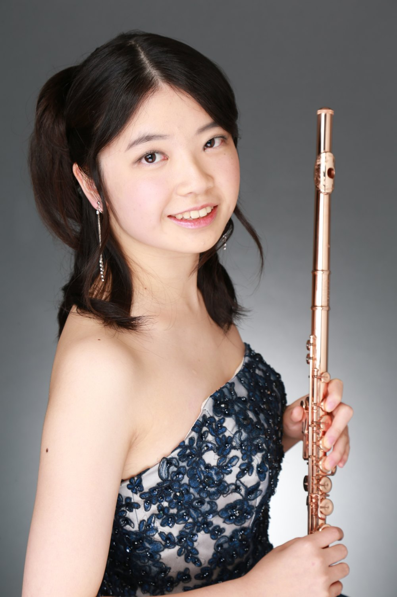

プロフィールAbout
北海道札幌市出身。11歳からフルートをはじめる。北海道札幌南高等学校、一橋大学経済学部卒業。4年半の外資系投資銀行勤務を経て、国立音楽大学大学院音楽研究科 修士課程および博士後期課程を修了。博士（音楽）。
フルートを髙橋聖純、菅井春恵、大友太郎、神田寛明の各氏に師事。
現在は産業技術総合研究所 人工知能研究センター 知的メディア処理研究チームの特別研究員として研究に従事。国立音楽大学ミュージック・アトリエ講師。
Born in Sapporo, Hokkaido, I began the flute at the age of eleven. I am a graduate of Sapporo Minami High School and of Hitotsubashi University, where I earned a bachelor's degree in economics. Following four and a half years in investment banking, I completed the master's and doctoral programs at the Graduate School of Music, Kunitachi College of Music, earning the degree of Doctor of Musical Arts (DMA).
I studied the flute with Seijun Takahashi, Harue Sugai, Taro Otomo, and Hiroaki Kanda.
I am currently a postdoctoral researcher with the Intelligent Media Processing Research Team, Artificial Intelligence Research Center, National Institute of Advanced Industrial Science and Technology (AIST), Japan. I also teach at the Music Atelier, Kunitachi College of Music.
経歴Career
研究Research
専門：音響信号処理、音楽情報処理
Research areas: acoustic signal processing and music information processing
演奏Performance
連絡先Contact
演奏・レッスンのご依頼、その他お問い合わせはこちらから。
For performance and lesson enquiries, and any other questions, please get in touch.